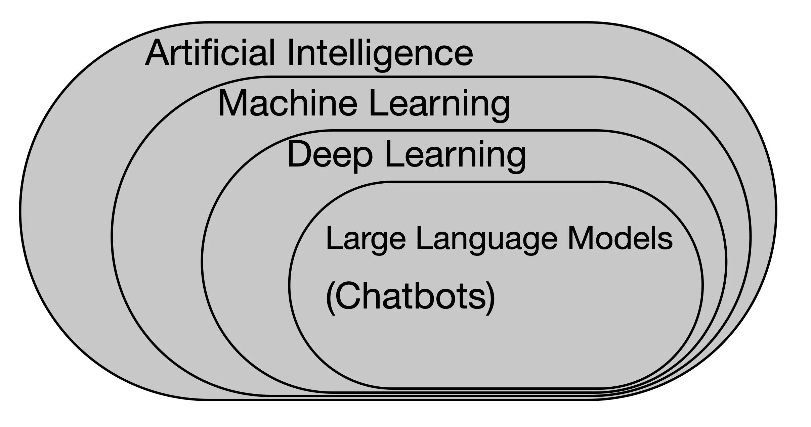

In the past few years, artificial intelligence has become almost synonymous with chatbots. When people hear the term "AI," they often think of systems like ChatGPT that can write essays, answer questions, or generate code.
But chatbots are only one small piece of a much larger field. Artificial intelligence has been developing for decades, and many of the systems that fall under the umbrella of AI look very different from conversational tools. Understanding what AI really means requires stepping back and looking at how these technologies relate to one another.

What Artificial Intelligence Really Means
Artificial intelligence refers to computer systems designed to perform tasks that normally require human intelligence. These tasks might include recognizing patterns, understanding language, or making simple calculations. The key idea is that computers are performing work that humans historically had to do themselves.
For example, imagine calculating the average of a set of numbers. Before computers, someone would need to add the numbers together and divide by the total count. Today, spreadsheet software like Excel performs the calculation instantly.
While you might not think of this as AI, it illustrates the basic concept: computers performing cognitive tasks that humans once carried out manually. These systems have become much more sophisticated. Instead of simply following rigid rules written by programmers, computers can learn patterns directly from data. This is what we refer to as machine learning.
Machine Learning: Learning From Data
Machine learning is a subset of artificial intelligence where computers learn patterns from data rather than relying solely on explicit rules. Instead of telling the computer exactly what steps to follow, we provide data and allow the system to learn relationships within that data.
A classic example is linear regression, one of the simplest machine learning models. Suppose we want to predict home electricity usage based on square footage. By analyzing historical data, houses with known sizes and electricity consumption, a linear regression model can learn a relationship between the two variables and use it to predict the electricity consumption of a new house.
The programmer does not specify the exact relationship between size and electricity use. The model learns the rule from the data itself. This means that if you have ever used a computer to fit a line to data points, you have built a simple machine learning model. Congratulations!
Machine learning includes many different types of models, such as decision trees, random forests, and support vector machines. While they vary in complexity, they all share the same basic idea: learning patterns from data to make predictions or decisions.
As datasets grew larger and computing power increased, researchers began developing models capable of learning far more complex relationships. This led to the rise of artificial neural networks and deep learning.
Deep Learning and Neural Networks
Artificial neural networks are loosely inspired by the structure of the human brain; layers of interconnected "neurons" transform input data into increasingly complex representations.
For example, consider a neural network designed to recognize images. The first layer might detect simple features such as edges or colors. Later layers combine those features to identify shapes, objects, and eventually entire scenes.
When neural networks contain many layers, the approach is known as deep learning. Deep learning models are powerful because they can approximate extremely complex relationships in data. Instead of manually designing features for a model to use, deep learning systems can automatically learn useful representations from raw inputs such as images, audio, or text.
Deep learning has driven many of the major breakthroughs in AI over the past decade, including image recognition, speech recognition, and machine translation. One application of deep learning that has mistakenly become synonymous with AI is the Large Language Model.
Large Language Models and Chatbots
Large Language Models (LLMs) are a specific type of deep learning model designed to work with human language. These models are trained on enormous collections of text—books, articles, websites, and other written material.
During training, the model learns to predict the next word in a sequence of text. Although this might sound simple, the process allows the system to capture complex patterns in language, including grammar, style, and factual relationships.
For example, if the model sees the phrase "The capital of Iran is...", it has learned from training data that the next word is likely "Tehran." Because the model predicts the most likely next word rather than being programmed with factual knowledge, it can produce incorrect answers.
By repeating this prediction process across billions of examples, LLMs develop an ability to generate coherent sentences, answer questions, summarize documents, and assist with many writing-related tasks.
However, it is important to remember that LLMs are just one specialized application of deep learning, which itself is just one branch of machine learning within the broader field of artificial intelligence.
Why This Distinction Matters
Because chatbots have recently become so visible, many people assume that they represent the entirety of AI. In reality, many of the most important AI systems in the world have nothing to do with conversational interfaces.
Machine learning models help detect fraud in financial transactions, optimize supply chains, forecast weather, predict ecological effects of climate change, and manage industrial processes. In many of these cases, the underlying models may be relatively simple compared to modern deep learning systems.
Choosing the right approach depends on the problem being solved. Sometimes a straightforward statistical model works best. Other problems may require complex neural networks or language models.
The Bigger Picture
Artificial intelligence did not suddenly appear with modern chatbots. It has been evolving for decades through advances in algorithms, computing power, and data availability. Large Language Models are an impressive milestone in this progression, but they represent only one part of a much broader field.
Using the term “AI” to refer to chatbots is not incorrect, but it is imprecise. Being more specific about machine learning, deep learning, or language models helps keep the conversation clear.